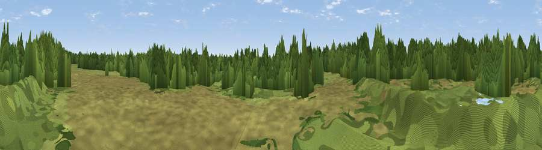

Pit Mound
#45734 in England · top 94% of its area beats it · near ClayhangerWhere it is
The exact computed spot (SK 03237 04603). Click the marker for map links.
The view, rendered

A 360° render of this exact spot computed from the terrain model, tree cover and land cover — summer colours, afternoon light, calibrated against photographs of famous viewpoints. Real trees, hedges and buildings will differ in detail.
The panorama
Grey silhouette: terrain skyline in each direction (720 bearings, Earth curvature and refraction included). Dashed green: skyline with trees (+15 m) and buildings (+8 m) as obstacles. Blue strip: how far the ground is visible on each bearing.
Where the view opens
Wedge length = distance to the farthest visible ground on that bearing (vegetation-aware). Rings at 10, 25 and 50 km.
What fills the view
43% woodland · 40% grassland · 11% built-up · 5% cropland · 2% water
Angular shares of the visible panorama (visual magnitude), not map area. Landscape diversity 0.51 (0–1 Shannon).
Key numbers
More beautiful places nearby
The staircase of upgrades: each row has a higher view potential than everything closer. Driving times are estimates from straight-line distance, calibrated against real road routing — check an actual route before setting out.
| Place | Direction | Drive | Score |
|---|---|---|---|
| Shireoak Hill | ESE · 3 km | ~7 min | 35.4 |
| Viewpoint near Stonnall | ESE · 3 km | ~8 min | 57.3 |
| Viewpoint near Cannock | NW · 6 km | ~13 min | 59.0 |
| Wimblebury Hill | N · 7 km | ~14 min | 62.0 |
| Viewpoint near Streetly | SSE · 8 km | ~15 min | 69.5 |
| Viewpoint near Clent | SSW · 26 km | ~42 min | 73.8 |
| Viewpoint near Clent | SSW · 26 km | ~42 min | 74.3 |
| The Ercall | W · 39 km | ~58 min | 79.4 |
52.63916, -1.95359 · source: osm viewpoint · position refined by local search. Computed location — check access rights before visiting.